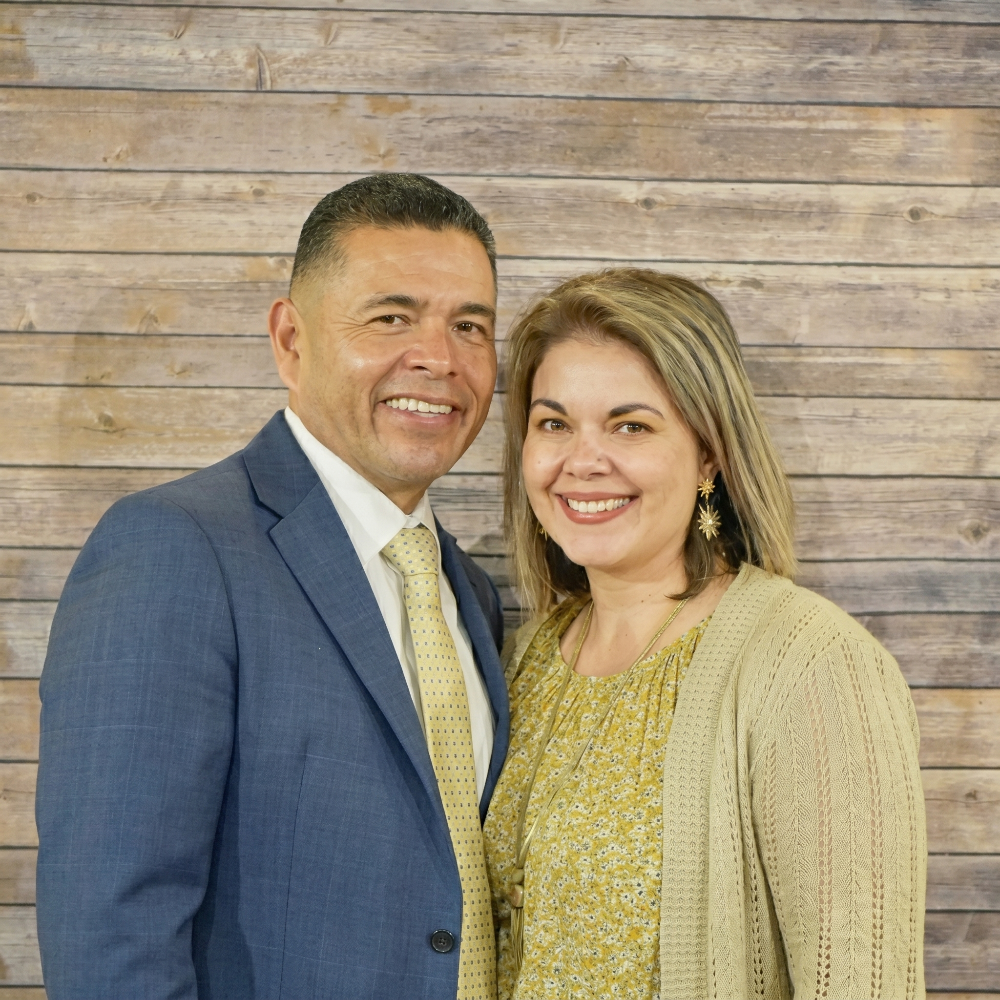

Senior Pastor
Jasper Whiston
Pastor Whiston leads Landmark Baptist Church with a heart for the Word of God and the people of Grand Junction. He and his family have anchored this congregation since its founding.
A warm, Bible-believing church family rooted in the heart of the Grand Valley. Everyone is welcome here — come as you are.
Established in May 2001 with just 20 people, God has blessed Landmark Baptist Church with tremendous growth, leading us to our beautiful campus on Ute Avenue in Grand Junction. What began with no chairs, no hymnals, and no offering plates has flourished into a thriving community of faith.
Our mission is simple: Love. Share. Reach. We love God, share His Word, and reach our community with the life-changing message of the Gospel. We offer worship and ministry in both English and Spanish.
"O taste and see that the LORD is good: blessed is the man that trusteth in him." — Psalm 34:8 (KJV)
Senior Pastor
Pastor Whiston leads Landmark Baptist Church with a heart for the Word of God and the people of Grand Junction. He and his family have anchored this congregation since its founding.

Youth Director
Spencer leads our teen and youth ministries with passion and purpose, including Colorado Teen Extreme and Wednesday outreach programs for young people across the Grand Valley.

Spanish Pastor
Pastor Alvarez leads Iglesia Bautista Los Linderos, our Spanish-language congregation. His ministry reaches families across the Grand Valley with the Gospel in their heart language.
We stand firmly on the Word of God. These are the foundational truths that guide everything we do at Landmark Baptist Church.
We believe the King James Bible is the inspired, preserved Word of God — the final authority for faith and practice.
We believe the Holy Bible — both Old and New Testaments — is the verbally inspired, infallible, inerrant Word of God. The King James Bible is our preserved Word of God in English, and is the sole authority for all matters of faith, life, and practice.
We believe in one God, eternally existing in three Persons: Father, Son, and Holy Spirit. God is perfect, infinite, and the sovereign Creator and Sustainer of all things. He is holy, just, and full of mercy and love toward His creation.
We believe in the virgin birth, sinless life, substitutionary death, bodily resurrection, and ascension of Jesus Christ. He is both fully God and fully man. He is the only mediator between God and man, and salvation is found in Him alone.
We believe in the personality and deity of the Holy Spirit, who convicts the world of sin, righteousness, and judgment. He regenerates believers at salvation, indwells and seals every believer, and empowers the church for service and witness.
We believe that all men are sinners by nature and by choice, and are under the condemnation of God. Salvation is by grace through faith in the shed blood of Jesus Christ alone — not by works. The believer is eternally secure in Christ.
We believe in the local, autonomous Baptist church as the expression of the body of Christ. We observe two ordinances: Baptism by immersion (for believers only) as a public declaration of faith, and the Lord's Supper as a memorial of Christ's sacrifice.
We'd love to meet you. Come visit us any Sunday morning or reach out — we'll answer any questions you have.
Nuestra congregación en español se reúne en el mismo campus de Landmark Baptist Church. Todos son bienvenidos a adorar a Dios en su idioma natal.
Our Spanish-language congregation meets at the same Landmark Baptist campus. All are welcome to worship God in their heart language.
Pastor — Iglesia Bautista Los Linderos